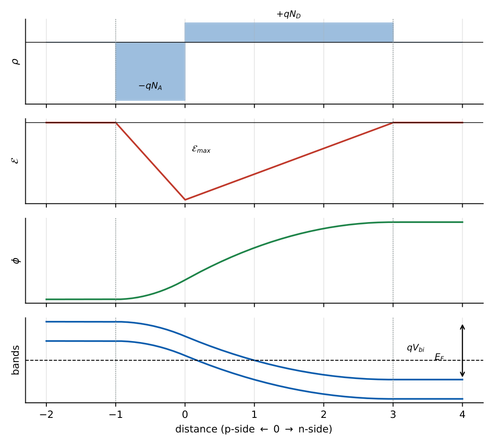

The PN Junction Diode
In this chapter
Built-in potential, depletion width and field for abrupt junctions, the ideal diode equation and its temperature behaviour, small-signal resistance, junction and diffusion capacitance, and Zener versus avalanche breakdown. Capacitance–voltage scaling is a favourite.
4.1 Junction formation and equilibrium
When p-type and n-type regions are joined, electrons diffuse into the p-side and holes into the n-side, leaving behind uncompensated ions: a depletion (space-charge) region with positive donor ions on the n-side and negative acceptor ions on the p-side. The resulting electric field opposes further diffusion. At equilibrium drift and diffusion cancel for each carrier, \(E_F\) is constant across the junction, and the bands bend by \(q\Vbi\).

Built-in potential: \(V_{bi}=\dfrac{kT}{q}\ln\dfrac{N_AN_D}{n_i^2}\).
Charge neutrality: \(N_Ax_p=N_Dx_n\) (the lightly doped side depletes more).
Depletion width (applied voltage \(V\); forward positive):
\[
W=x_n+x_p=\sqrt{\frac{2\varepsilon_s(V_{bi}-V)}{q}\left(\frac1{N_A}+\frac1{N_D}\right)},\quad x_n=\frac{WN_A}{N_A+N_D},\ x_p=\frac{WN_D}{N_A+N_D}.
\]
Peak field (at the metallurgical junction): \(\mathcal E_{max}=\dfrac{qN_Dx_n}{\varepsilon_s}=\dfrac{2(V_{bi}-V)}{W}\).
One-sided junction (\(N_A\gg N_D\)): \(W\approx\sqrt{\dfrac{2\varepsilon_s(V_{bi}-V)}{qN_D}}\), all the depletion lies in the lightly doped side.
\(N_A=10^{17}\), \(N_D=10^{16}\,\text{cm}^{-3}\), Si, 300 K: \(V_{bi}=0.0259\ln\!\dfrac{10^{33}}{2.25\times10^{20}}=0.753\) V. At \(V=0\): \(W=\sqrt{\dfrac{2(1.036\times10^{-12})(0.753)}{1.6\times10^{-19}}\left(\dfrac1{10^{17}}+\dfrac1{10^{16}}\right)}=0.327\,\mu\)m, \(x_n=0.298\,\mu\)m, \(x_p=0.030\,\mu\)m, \(\mathcal E_{max}=4.6\times10^4\) V/cm. At \(V=-5\) V: \(W=0.905\,\mu\)m.
4.2 Forward and reverse bias
Forward bias (\(V>0\)): barrier lowers to \(V_{bi}-V\), the depletion region narrows, minority carriers are injected across (\(np=n_i^2e^{V/V_T}\) at the edge) and diffuse; current rises exponentially. Reverse bias: barrier \(V_{bi}+V_R\), the depletion region widens, only a small saturation (generation) current flows.
4.2.1 Ideal diode equation
\(I=I_s\left(e^{V/\eta V_T}-1\right)\), \(\ \eta=1\) (ideal) to \(2\) (recombination in the depletion region).
Long diode: \(I_s=qA\left(\dfrac{D_pp_{n0}}{L_p}+\dfrac{D_nn_{p0}}{L_n}\right)=qAn_i^2\left(\dfrac{D_p}{L_pN_D}+\dfrac{D_n}{L_nN_A}\right)\).
Short diode (widths \(W_n,W_p\ll L\)): replace \(L\) by the neutral width.
For a p\({}^+\)n diode the hole current dominates: \(I_s\approx qAD_pn_i^2/(L_pN_D)\).
Forward: \(I\approx I_se^{V/\eta V_T}\); at constant current the diode voltage changes by \(\eta V_T\ln10=59.5\) mV per decade of current (at \(\eta=1\)).
Temperature behaviour. \(I_s\propto n_i^2\propto T^{3}e^{-E_g/kT}\): it roughly doubles for each \(7\)–\(10^\circ\)C rise. At fixed forward current \(V_D\) falls by about \(2\) mV/\({}^\circ\)C. Leakage in reverse bias also contains a generation component \(\propto W\propto\sqrt{V_R+V_{bi}}\) so it does not saturate perfectly.
\(I_s=10^{-12}\) A, \(V=0.6\) V: \(I=10^{-12}e^{0.6/0.0259}=11.5\) mA.
If \(V_D=0.70\) V at \(1\) mA, then at \(10\) mA \(V_D=0.70+0.0259\ln10=0.760\) V.
From \(25^\circ\)C to \(75^\circ\)C at constant current: \(\Delta V_D\approx-2\times50=-100\) mV.
4.2.2 Small-signal behaviour
Dynamic (incremental) resistance \(r_d=\dfrac{\eta V_T}{I_D}\) (25.9 \(\Omega\) at 1 mA).
Junction (depletion) capacitance: \(C_j=\dfrac{\varepsilon_sA}{W}=\dfrac{C_{j0}}{(1-V/V_{bi})^m}\), \(\ m=\tfrac12\) (abrupt), \(\tfrac13\) (linearly graded). \(\ C_j\propto(V_{bi}+V_R)^{-m}\).
Diffusion capacitance (forward bias): \(C_d=\dfrac{\tau_T\,I_D}{\eta V_T}\), with \(\tau_T\) the transit/lifetime of stored charge; \(C_d\) dominates in forward bias, \(C_j\) in reverse.
For the example above \(C_{j0}=\varepsilon_s/W=3.2\times10^{-8}\,\text{F/cm}^2\), falling to \(1.1\times10^{-8}\) at \(V_R=5\) V. Stored charge \(Q=I\tau\); \(C_d\) for \(I=1\) mA and \(\tau=1\) ns is \(38.6\) pF.
4.3 Breakdown mechanisms
| Zener (tunnelling) | Avalanche | |
|---|---|---|
| Mechanism | band-to-band tunnelling in a very thin, heavily doped junction | impact ionisation multiplication |
| Breakdown voltage | \(<\approx5\,\)V | \(>\approx7\,\)V (between: both) |
| Temperature coefficient | negative | positive |
| Doping | heavy | lighter |
Avalanche multiplication: \(M=1/[1-(V_R/V_{BR})^n]\). Breakdown occurs when \(\mathcal E_{max}\) reaches the critical field (\(\sim3\times10^5\) V/cm in Si). Lower doping \(\Rightarrow\) higher \(V_{BR}\) (\(V_{BR}\propto N^{-3/4}\) for an abrupt one-sided junction). Reach-through (punch-through) occurs when the depletion region spans a thin lightly doped layer before avalanche.
(i) \(x_n/x_p=N_A/N_D\): the lightly doped side has the wider depletion layer. (ii) \(V_{bi}\) cannot be measured with a voltmeter (contact potentials cancel). (iii) Forward current needs the barrier to be lowered: \(V<V_{bi}\) always. (iv) \(C_j\) increases with forward bias and decreases with reverse bias. (v) Zener breakdown has a negative temperature coefficient; avalanche positive.
\(V_{bi}\) rises by \(59.5\) mV per decade of \(N_AN_D\) each side: e.g. \(10^{16}\)–\(10^{16}\to0.69\), \(10^{17}\)–\(10^{16}\to0.75\). Capacitance ratio: \(\dfrac{C_1}{C_2}=\left(\dfrac{V_{bi}+V_{R2}}{V_{bi}+V_{R1}}\right)^{m}\). Diode voltage drift \(-2\) mV/\({}^\circ\)C.
4.4 GATE problems
Q1. In a p\({}^+\)n junction the depletion region extends mainly into (A) the p\({}^+\) side (B) the n side (C) equally (D) neither.
Q2. Junction capacitance of an abrupt junction varies with reverse voltage \(V_R\) as (A) \(V_R^{1/2}\) (B) \(V_R^{-1/2}\) (C) \(V_R^{-1/3}\) (D) \(V_R^{-2}\) (for \(V_R\gg V_{bi}\)).
Q3. The temperature coefficient of avalanche breakdown voltage is (A) positive (B) negative (C) zero (D) depends on bias only.
Q4. Under forward bias the diode capacitance is dominated by (A) depletion (B) diffusion (C) parasitic (D) oxide capacitance.
Answers: Q1 (B). Q2 (B). Q3 (A). Q4 (B).
Q5. For Si with \(N_A=10^{17}\), \(N_D=10^{16}\,\text{cm}^{-3}\) the built-in potential is (A) 0.65 V (B) 0.75 V (C) 0.85 V (D) 0.95 V.
Q6. An abrupt junction has \(V_{bi}=1\) V and \(C_j\) measured at \(V_R=3\) V and \(15\) V. The ratio \(C(3\text{V})/C(15\text{V})\) is (A) 2 (B) 4 (C) 5 (D) \(\sqrt5\).
Q7. A silicon diode has \(V_D=0.70\) V at \(1\) mA (\(\eta=1\), \(V_T=25.9\) mV). Its voltage at \(10\) mA is (A) 0.73 V (B) 0.76 V (C) 0.80 V (D) 0.96 V.
Answers: Q5 (B). Q6 (A): \(\sqrt{16/4}=2\). Q7 (B): \(+59.6\) mV.
Q8. Dynamic resistance (\(\Omega\), nearest integer) at \(I_D=2\) mA, \(V_T=25.9\) mV: .
Q9. Peak electric field (kV/cm) for the example junction (\(V_{bi}=0.753\) V, \(W=0.327\,\mu\)m, \(V=0\)): .
Q10. Diffusion capacitance (pF, one decimal) at 1 mA with \(\tau_T=1\) ns: .
Answers: Q8: \(25.9/2=12.95\to13\). Q9: \(2\times0.753/(0.327\times10^{-4})=4.6\times10^4\) V/cm \(=46\) kV/cm. Q10: \(38.6\).
Q11. Select the true statements. (A) \(x_n/x_p=N_A/N_D\). (B) Forward-biased \(C_d\) is proportional to current. (C) Zener breakdown has a positive temperature coefficient. (D) \(W\propto\sqrt{V_{bi}-V}\).
Answers: Q11: (A), (B), (D).
T1. Write \(V_{bi}\). T2. What happens to \(W\) if \(V_R\) rises from 0? T3. \(\eta V_T\ln10\) value?
Answers: T1: \(V_T\ln(N_AN_D/n_i^2)\). T2: grows as \(\sqrt{V_{bi}+V_R}\). T3: 59.5 mV.
- \(V_{bi}=V_T\ln(N_AN_D/n_i^2)\); \(W=\sqrt{2\varepsilon(V_{bi}-V)/q\,(1/N_A+1/N_D)}\); \(x_nN_D=x_pN_A\).
- \(I=I_s(e^{V/\eta V_T}-1)\); 59.5 mV/decade; \(-2\) mV/\({}^\circ\)C; \(r_d=\eta V_T/I\).
- \(C_j\propto(V_{bi}+V_R)^{-m}\); \(C_d=\tau I/\eta V_T\).
- Zener \(<5\) V (\(-\)ve TC); avalanche \(>7\) V (\(+\)ve TC).